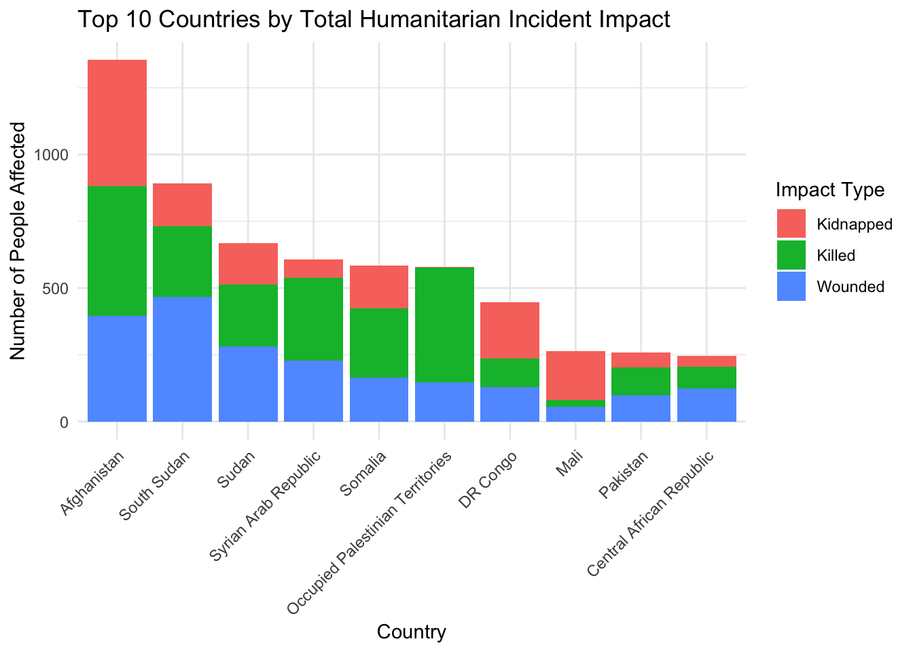

In the complex landscapes of conflict zones and fragile states, humanitarian organizations often operate on the edge of danger. While their missions are rooted in peace, protection, and aid, their presence can inadvertently place them in harm’s way. Over the past few decades, hundreds of incidents involving humanitarian personnel have unfolded across the globe — from ambushes and kidnappings to roadside bombings and politically motivated attacks. These incidents are not just isolated events; they reflect broader patterns of instability, insecurity, and geopolitical tension.
This project was born out of a desire to transform raw incident data into meaningful insights. Rather than simply reporting where and when violence occurred, this analysis asks deeper questions: What are the motives behind these attacks? Which countries face the greatest risk? Are some types of violence more prevalent under specific circumstances? Using historical data from over 4,000 recorded security incidents, I want to uncover the underlying patterns and stories hidden within.
The primary motivation behind this visualization is twofold. First, it seeks to uncover and display the global distribution of humanitarian-related security incidents in a way that is both accessible and interactive. By mapping and analyzing the data through visual storytelling, users can immediately grasp the geographic concentration, severity, and patterns of violence against humanitarian actors across time. This allows stakeholders to not only identify hotspots, but also to understand the evolving nature of risks in different regions.
Second, and more critically, this dashboard is designed to function as a travel and risk advisory tool for international personnel such as United Nations staff, NGO workers, and humanitarian responders. By incorporating motive-based filters, severity scores, and dynamic temporal insights, the platform offers actionable intelligence for field planning and mission readiness. This project turns raw data into foresight — helping those who step into danger zones do so with greater awareness, preparedness, and protection.
Code
# Load librarieslibrary(tidyverse)# Read in the datasetdf <-read_csv("security_incidents.csv")# Summarize total killed, wounded, and kidnapped by countrysummary_df <- df %>%filter(!is.na(Country)) %>%group_by(Country) %>%summarise(Killed =sum(`Total killed`, na.rm =TRUE),Wounded =sum(`Total wounded`, na.rm =TRUE),Kidnapped =sum(`Total kidnapped`, na.rm =TRUE) ) %>%mutate(Total = Killed + Wounded + Kidnapped) %>%arrange(desc(Total)) %>%slice_head(n =10)# Convert to long format for ggplotplot_data <- summary_df %>%select(Country, Killed, Wounded, Kidnapped) %>%pivot_longer(cols =-Country, names_to ="Type", values_to ="Count")# Plotggplot(plot_data, aes(x =reorder(Country, -Count), y = Count, fill = Type)) +geom_bar(stat ="identity") +labs(title ="Top 10 Countries by Total Humanitarian Incident Impact",x ="Country",y ="Number of People Affected",fill ="Impact Type" ) +theme_minimal() +theme(axis.text.x =element_text(angle =45, hjust =1))

Let’s take a quick look on the dataset.
This visualization highlights the top ten countries most affected by humanitarian security incidents based on the total number of individuals killed, wounded, or kidnapped. By stacking these three impact types, the chart presents a comprehensive view of the human cost associated with each location. Countries like Afghanistan, South Sudan, and the Occupied Palestinian Territories clearly stand out, underscoring the persistent volatility and danger faced by humanitarian workers in those regions. This visualization not only reveals the severity of the threats but also provides a powerful foundation for understanding where interventions, policy support, and protective measures may be most urgently needed. It serves as a crucial entry point into the broader analysis of global humanitarian risks.
Attacks against United Nations personnel and international humanitarian staff are not only unacceptable — they are inhumane. These individuals dedicate their lives to delivering aid, promoting peace, and supporting vulnerable communities around the world. When they become targets of violence by terrorist organizations or armed groups, it represents a grave violation of international humanitarian principles. Such actions threaten not only the safety of those on the front lines but also the integrity of global humanitarian efforts as a whole. This project aims to highlight the urgency of protecting those who protect others — and to bring data-driven awareness to the global patterns of risk they face.